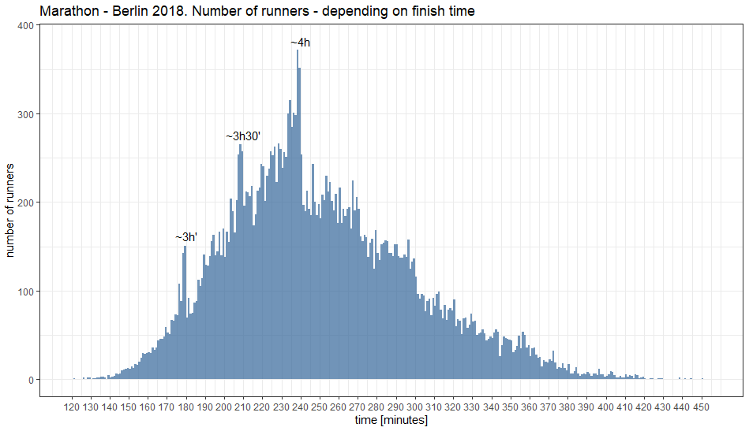

Road running is a democratic event. The same Run can be attended by a Olimpic champion, a (not so) successful professional, an amateur for whom running is a passion, or someone who finds time for two trainings a week. This diversity results in a wide range of achieved finish times and is visible especially during the longest runs - Marathons. One can see a common patterns, I will show it with analysis of results for one of the largest marathons - Berlin 2018 (about 28,000 times achieved by men).
Lets visualize it
There is a histogram below. The X axis shows the range of all achieved results divided into one minute bins. The height of the bar (along the Y axis) means the number of people who finished the run with the time within a particular minute (without taking into account the seconds) - i.e. the most people (about 370 runners) completed the marathon with results in the range of 3:58:00 - 3: 58:59

On the left side of chart one can see Eliud Kipchoge, he broke the world record then - 02:01:39. The slowest runners are on the right side (at least those who managed to reach the finish line :-)). One technical note here: with many thousands of runners, it is not possible for all of them to start at the same time. Some are closer to the Start, others are further. Additionally, the runners are grouped into zones (depending on the declared time they are able to achieve), which are “released” every few minutes (so that faster runners do not have to run through the crowd of slower ones). This is not a problem for data scientist because time of the individual runner is not started at gun shot. All runners have the chip in their bib number and their individual time is counted between crossing the Start and Meta lines.
And now the good story
Every beginner just wants to finish the run. If he already finished few runs, and prepared himself well, he thinks about “breaking 4h”. This border is nicely marked on the chart, many participants of the run finish it with the time just below 4 hours. Behind this border you can see a significant decrease of runners. Everyone who is able to run 42 km in about 4h will distribute his/her power and will do their best in the last kilometers to run below 4 hours, not a few seconds after that time. There is also additional help, one can follow pacemekers - runners engaged by the organizers of the run. They are running with small balloons with information about the time they will finish the run. Some of them have balloons with “4:00”. Piece of cake, just run close to them ;-)
The (really) strong amateurs are trying to break 3h30 ’(the local maximum on the chart). If you break 3h (next local maximum) it means, your life after work is a Project. Trainings, their types, body monitoring, diet, rest.
There is also the right side of the chart. The whole chart doesn’t look like Gaussian distribution. The results are not drawn by dice :-) . If we were to persuade 100 additional marathon runners to participate in such run, it would turn out that few would be able to cross the 3h limit. Getting close to a high record is extremely difficult, but there is a lot of space on the right side of the chart :-). Many runners consider 5h or just finishing the run as a life challenge (which is also a challenge, because the organizers close the route after 8 hours and traffic road is restored).